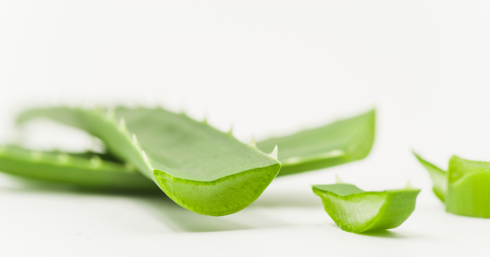

သင်မသိသေးတဲ့ ရှားစောင်းလက်ပတ်ရဲ့ အသုံးဝင်ပုံ ၁၀ ချက်

ရှားစောင်းလက်ပတ်ရဲ့ ဂျယ်လီအနှစ်မှာ ဗီတာမင်တွေ ရောင်ရမ်းမှုကို သက်သာစေတဲ့ သတ္တိတွေ ပါဝင်တာကြောင့် ပိုးကောင်ကိုက်တာကနေ ဆံပင်ပျော့ဆေးအထိ မျိုးစုံသုံးလို့ ရပါတယ်။
၁။ ပိုးကောင်ကိုက်တာကို ကုသပေးနိုင်တယ်
တစ်ညလောက် ခြင်ထောင် မထောင်မိတာနဲ့ မနက်ကျ ခြင်ကိုက်ဖုတွေ ပြွတ်သိပ်နေပြီ ဟုတ်။ ရှားစောင်းလက်ပတ် ဂျယ်လီအနှစ်ကိုပဲ ဖြစ်ဖြစ် ဆေးဆိုင်မှာ ရောင်းတဲ့ ရှားစောင်းလက်ပတ်အရည်ကိုပဲဖြစ်ဖြစ် ဝယ်လိမ်းလိုက်ပါ။ သူ့မှာ ပါတဲ့ ရောင်ရမ်းမှုကို သက်သာစေတဲ့ သတ္တိကြောင့် အဖုအပိမ့်ကို မြန်မြန်ကျစေပါတယ်။ အယားလည်း သက်သာစေတာကြောင့် မကုတ်မိတော့ဘူးပေါ့။
၂။ မိတ်ကပ် ဖျက်ဆေးအဖြစ် သုံးနိုင်တယ်
စျေးလည်းမကြီး အသားအရည်ကိုလည်း မထိခိုက်တဲ့ သဘာဝ မိတ်ကပ် ဖျက်ဆေးကို ရှာနေတယ်ဆိုရင်တော့ ရှားစောင်းလက်ပတ်နဲ့ သံလွင်ဆီကို ရောပြီး အသုံးပြုနိုင်ပါတယ်။ ဒီနှစ်ခုက မိတ်ကပ်ကို ဖျက်ပေးတဲ့အပြင် ရေဓာတ်ကို ဖြည့်တင်းပေးပြီး ဆဲလ်အသစ်တွေကို ဖြစ်စေတာကြောင့် အသားအရေကို နုပျိုစေပါတယ်။
၃။ အပူလောင်ဖုကို ကုသပေးနိုင်တယ်
အပူလောင်တာကြောင့် အရည်ကြည်ဖုထွက်လာတယ်ဆိုရင် ရှားစောင်းလက်ပတ် ဂျယ်လီအနှစ် အေးအေးလေးကို လိမ်းပေးနိုင်ပါတယ်။ ရောင်ရမ်းမှုကို သက်သာစေတဲ့ သတ္တိကြောင့် နီတာ၊ ရောင်တာကို လျော့ကျစေပါတယ်။ အရည်ကြည်ဖု ပေါက်သွားရင်လည်း အရေပြားစိုစွတ်အောင် ဆက်လိမ်းနိုင်ပါတယ်။ ဒါမှ မြန်မြန်သက်သာမှာပါ။
၄။ နေလောင်ဒဏ်ကို သက်သာစေတယ်
ရှားစောင်းလက်ပတ်ကို နာမည်ကြီးစေတဲ့ နောက်တစ်မျိုးက နေလောင်ဒဏ်ကို ကုသပေးနိုင်တာပါပဲ။ တခြား အစိုဓာတ်ထိန်းခရင်မ်- Moisturizer တွေက အပူကို စုပ်ယူနိုင်တာကြောင့် နေလောင်တာကို ပိုဆိုးစေပါတယ်။ ရှားစောင်းလက်ပတ်ကတော့ အေးမြစေတဲ့ ဂုဏ်သတ္တိ ပါဝင်တာကြောင့် နေလောင်ဒဏ်ကို သက်သာစေပါတယ်။ ဒါ့ပြင် အစိုဓာတ်ထိန်း- Moisturizing သတ္တိရှိတာကြောင့် အရေခွံကွာတာကို ကာကွယ်ပေးပြီး နေလောင်ဒဏ်ကို မြန်မြန်သက်သာစေပါတယ်။
၅။ အသားအရေကို စိုပြေစေတယ်
ရှားစောင်းလက်ပတ်က ခန္ဓာကိုယ်တစ်ခုလုံးမှာ သုံးနိုင်တဲ့ သဘာဝ အစိုဓာတ်ထိန်းခရင်မ်- Moisturizer ပဲ ဖြစ်ပါတယ်။ အထူးသဖြင့် အဆီမပြန်တာကြောင့် မျက်နှာမှာ သုံးလို့ အဆင်ပြေပါတယ်။ ဒါပေမယ့် တဖက်မှာ သဘာဝချေးချွတ်ဆေး – Exfoliator လည်း ဖြစ်တာကြောင့် အလွန်အကျွံသုံးမိရင် အရေပြားခြောက်သွေ့ပြီး ထိခိုက်နိုင်လို့ သတိထားရပါမယ်။
၆။ ဆံပင်ပျော့ဆေးအဖြစ် သုံးနိုင်တယ်
သုံးနေကျ ဆံပင်ပျော့ဆေးတွေအစား ရှားစောင်းလက်ပတ်အနှစ်ကို ခေါင်းမလျှော်ခင် ငါး မိနစ်လောက် ဆံပင်မှာ လိမ်းထားကြည့်ပါလား။ ဆံပင်လေးက နူးညံ့ပြီး အိကျနေမှာပါ။ အကြောင်းက ရှားစောင်းလက်ပတ်မှာ ဆံပင်အတွက် လိုအပ်တဲ့ အာဟာရတွေ အစိုဓာတ်တွေ ပါဝင်ပြီး ဆံပင်ကို သန်စွမ်းစေလို့ပါပဲ။
၇။ အမွှေးရိတ်ခရမ်အဖြစ် သုံးနိုင်တယ်
ရှားစောင်းလက်ပတ်က အစိုဓာတ်ကို ဖြည့်တင်းပေးနိုင်တာကြောင့် တခြား အမွှေးရိတ်ခရမ်တွေအစား သုံးနိုင်ပါတယ်။ သူ့ကြောင့် ရိတ်ရတာလည်း ပိုချောတယ်။ ဇာဂနာအနာ- Razor Burn တွေလည်း မရဘူး။ ဒါ့အပြင် အစိုဓာတ် ပါဝင်တာကြောင့် ရိတ်ပြီးရင်လည်း အသားအရေကို မခြောက်သွေ့စေပါဘူး။
၈။ ဝက်ခြံကို ကုသပေးနိုင်တယ်
ရှားစောင်းလက်ပတ်က တကယ်ပဲ ဝက်ခြံ ထွက်တာကို လျော့ကျစေပါတယ်။ ရောင်ရမ်းမှုကို သက်သာစေတဲ့ သတ္တိရှိတာကြောင့် ဝက်ခြံ နီရဲရောင်ရမ်းတာတွေကို သက်သာစေပါတယ်။ ဒါ့အပြင် ပိုးသေတဲ့ သတ္တိလည်း ရှိတာကြောင့် ဝက်ခြံကို ဖြစ်စေတဲ့ ဘတ်တီးရီးယားတွေကို သတ်တဲ့နေရာမှာ ထိပ်ပါပဲ။ ဒါကြောင့် ရှားစောင်းလက်ပတ်နဲ့ တည့်၊ မတည့်ကို အရင်စမ်းသပ်ပြီး တည့်တယ်ဆိုရင် မျက်နှာကပ်- Face Mask အနေနဲ့ သုံးကြည့်လို့ ရပါတယ်။
၉။ ဗောက်ပျောက်စေတယ်
သုံးနေကျ ဗောက်ပျောက်ခေါင်းလျှော်ရည်တွေကို ခဏထားပြီး ရှားစောင်းလက်ပတ်အနှစ်ကို ပြောင်းသုံးကြည့်ပါလား။ ခေါင်းမလျှော်ခင် ရှားစောင်းလက်ပတ်အနှစ်ကို လိမ်းထားပြီး ငါး မိနစ်လောက်နေမှ လျှော်ချလိုက်ပါ။ ဗောက်သက်သာစေတဲ့အပြင် ဦးရေပြားအေးမြစေတာ၊ ဆံပင်ပျော့တာ၊ သန်စွမ်းစေတာ စတဲ့ အကျိုးကျေးဇူးတွေပါ ရရှိမှာပါ။
၁၀။ မီးလောင်နာကို သက်သာစေပါတယ်
ရှားစောင်းလက်ပတ်က နေလောင်တာကိုပဲ သက်သာစေတာ မဟုတ်ပါဘူး။ သိပ်မပြင်းထန်တဲ့ မီးလောင်နာကို ကုသတဲ့နေရာမှာလည်း ရှားစောင်းလက်ပတ်က 1% Silver Sulfadiazine ထက် အနာကို ပိုသက်သာစေပြီး အနာကျက်လည်း မြန်ပါတယ်တဲ့။
Source-ဒေါက်တာ ထက်ထက်ဇော်ဝင်း